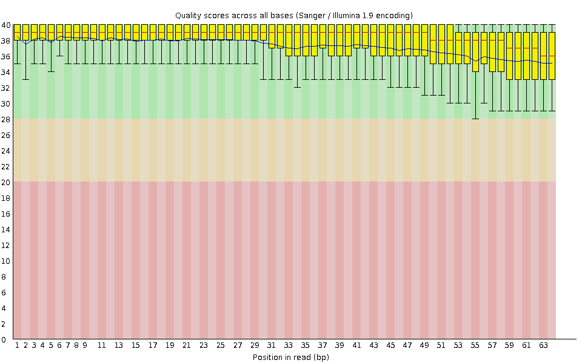
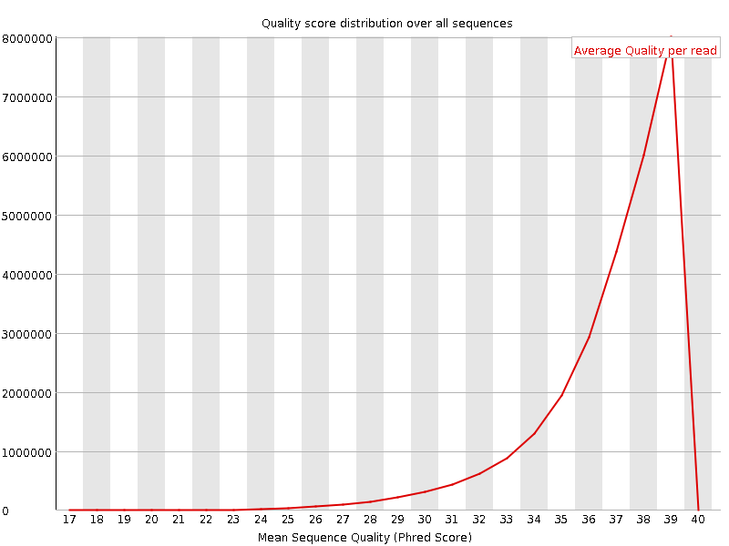
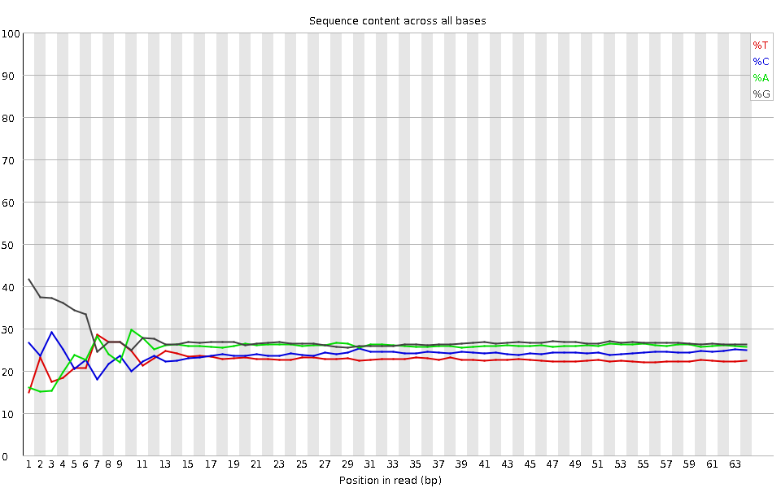
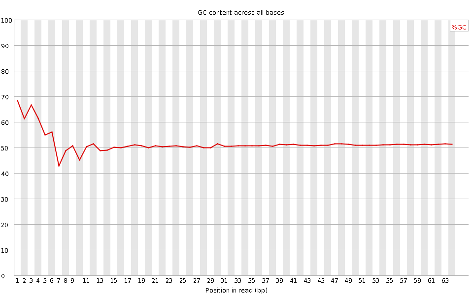
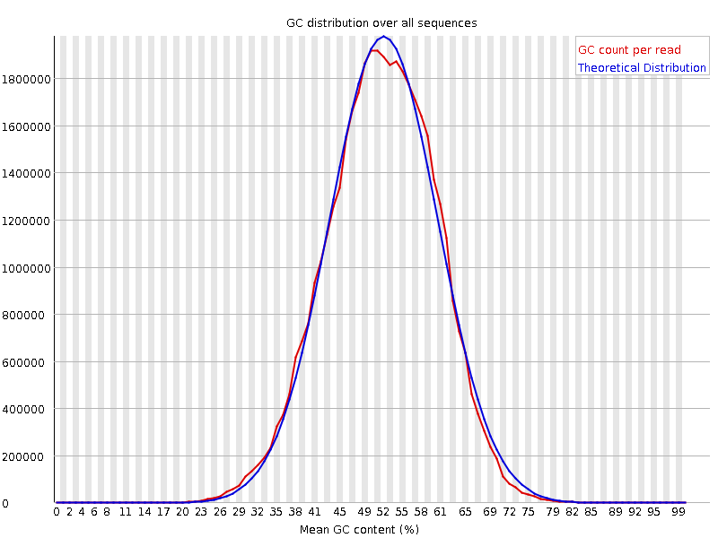
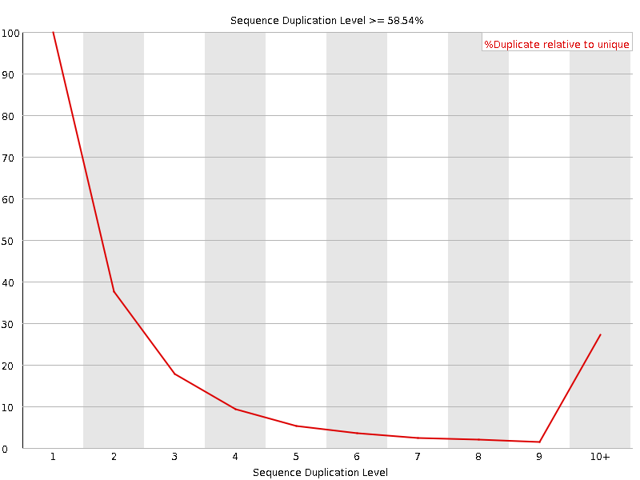
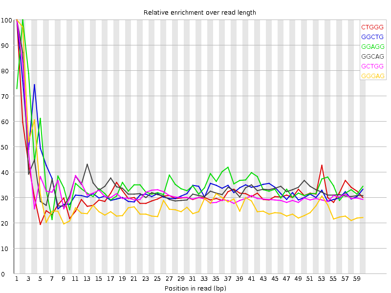

![[OK]](Icons/tick.png) Basic Statistics
Basic Statistics
| Measure | Value |
|---|---|
| Filename | SRR307914_pe_1.f.fastq |
| File type | Conventional base calls |
| Encoding | Sanger / Illumina 1.9 |
| Total Sequences | 27442786 |
| Filtered Sequences | 0 |
| Sequence length | 64 |
| %GC | 51 |
Per base sequence quality

Per sequence quality scores

![[FAIL]](Icons/error.png) Per base sequence content
Per base sequence content

Per base GC content

Per sequence GC content

Per base N content

Sequence Length Distribution

Sequence Duplication Levels

![[WARN]](Icons/warning.png) Overrepresented sequences
Overrepresented sequences
| Sequence | Count | Percentage | Possible Source |
|---|---|---|---|
| CCGTCGGCATGTATTAGCTCTAGAATTACCACAGTTATCCAAGTAGGAGAGGAGCGAGCGACCA | 37981 | 0.1384006711271953 | No Hit |
| CCCGTCGGCATGTATTAGCTCTAGAATTACCACAGTTATCCAAGTAGGAGAGGAGCGAGCGACC | 35805 | 0.13047144703165342 | No Hit |
| GTCGGCATGTATTAGCTCTAGAATTACCACAGTTATCCAAGTAGGAGAGGAGCGAGCGACCAAA | 32675 | 0.11906589950451824 | No Hit |
Kmer Content

| Sequence | Count | Obs/Exp Overall | Obs/Exp Max | Max Obs/Exp Position |
|---|---|---|---|---|
| CTGGG | 3780885 | 1.9888667 | 6.2331643 | 1 |
| GGCTG | 3712300 | 1.952789 | 5.603662 | 1 |
| GGAGG | 4662315 | 1.913191 | 5.200105 | 2 |
| GGCAG | 3909195 | 1.8381721 | 5.292063 | 1 |
| GCTGG | 3456725 | 1.8183483 | 5.551427 | 1 |
| GGGAG | 3976745 | 1.6318657 | 5.7331524 | 1 |
| GTGGG | 3158570 | 1.4499753 | 7.5461307 | 1 |
| TGGGG | 2958365 | 1.358069 | 5.1623664 | 1 |
| GGGGA | 3230390 | 1.3255973 | 6.583442 | 1 |
| GGGGT | 2524140 | 1.1587335 | 5.6840434 | 1 |
| GGGGG | 2755745 | 1.0453581 | 6.4300017 | 1 |
| CGGGG | 1605025 | 0.69766986 | 5.079609 | 1 |